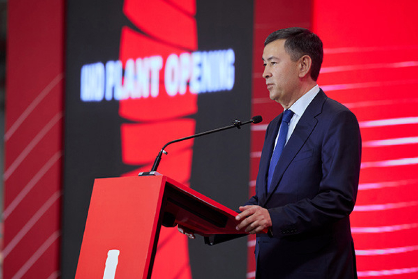

Будьте в курсе последних новостей
подпишитесь на наш Telegram-канал
Tashkent, Uzbekistan (UzDaily.com) — The Coca-Cola Company has opened its fourth beverage production plant in Uzbekistan with an investment of over US$110 million.
The fourth plant was officially inaugurated on 15 May in Jambay district of Samarkand region.
The opening ceremony was attended by Minister of Investments, Industry, and Trade of Uzbekistan Laziz Kudratov; the khokim (governor) of Samarkand region Erkin Turdimov, the representative and CEO of The Coca-Cola Company James Quincey; the chairman of Anadolu Group Tuncay Özilhan; the CEO of Anadolu Group Burak Başarır, representatives of diplomatic missions from Turkiye and the United States in Uzbekistan, businesspeople and others.
 During the ceremony, Erkin Turdimov, the khokim of Samarkand region, noted that the entry of a major global brand into Jambay district of Samarkand region is a significant event for the region. He emphasized that during discussions with business representatives, they complained about the insufficient supply of soft drinks on hot days. The new beverage production capacities will help meet this demand, he underlined/
In turn, Minister of Investments, Industry, and Trade Laziz Kudratov stressed that the launch of the plant marks an important milestone not only for Coca-Cola but also for Uzbekistan’s dynamically developing economy. He stated that Coca-Cola’s entry into Uzbekistan is a testament to the country’s flourishing business environment.
The minister added that the company has already made a significant contribution to the economy: there are three plants operating in Tashkent, Urgench, and Namangan. Laziz Kudratov noted that these plants have attracted US$500 million in investments and created thousands of new jobs. Today’s investment in Samarkand will further increase these numbers. Uzbekistan is committed to creating a favorable business climate. “Our reforms are not just promises but actions that have made our investment environment more attractive and competitive,” the minister said.
“The new Coca-Cola plant in Samarkand is more than just a production facility. It symbolizes the fruitful cooperation between Uzbekistan and global investors. It is a beacon of our progress and our commitment to creating an environment where business can thrive,” he noted.
Chairman and CEO of The Coca-Cola Company James Quincey remarked: “We are marking a truly significant milestone – the opening of our newest bottling plant. Today is not just about expanding the Coca-Cola system; it is a testament to the partnership between Coca-Cola and Uzbekistan, built on mutual respect, shared goals, and a vision for a sustainable future.”
“This new plant symbolizes our commitment to Uzbekistan, its economy, its people, and the environment. On this land with a rich history and cultural heritage, we see limitless opportunities,” stated the head of Coca-Cola.
“Samarkand, known for its important role on the Silk Road, has long been a center of trade and innovation. Our investments in Samarkand are a real treasure. It reflects our belief in the potential of Uzbekistan’s economy to drive growth,” he added.
According to him, Coca-Cola’s goal is to create jobs, contribute to economic development, and support community initiatives that improve people’s lives. “Because sustainable development is also at the core of our activities. The state of the art technology of this plant minimizes our environmental impact, conserves resources, and reduces waste. We aim to replenish every drop of water we use, ensure our packaging is recyclable, and support a circular economy,” he emphasized.
James Quincey expressed hope for deepening engagement with the community through a partnership that promotes well-being and opportunities.
Anadolu Group CEO Burak Başarır noted that Uzbekistan is the fastest-growing international division of Anadolu Group, having nearly doubled since 2021. He recalled that the company has invested US$500 million in Uzbekistan. “Initially, we invested over US$250 million in acquiring the company, and then about US$120 million in production,” he said.
According to him, the Turkish company has made significant investments in its partners, adding new technologies to existing plants in Tashkent, Namangan, and Urgench to increase their capacities. “We hope to continue investing in Uzbekistan. We believe in creating shared values. When we grow, we can make a difference in the future. When we grow, our partners grow along with us,” he added.
“We are investing in thousands of coolers to service our products at points of sale. That is why we are investing in new technologies to enhance our market approach,” he said.
“We aim to build a sustainable and profitable business in Uzbekistan. This facility does not just represent an expansion of production capacity but also symbolizes our ongoing ambitions to grow our business in Uzbekistan. Currently, we provide over 1,600 jobs in Uzbekistan. This facility will create more than 300 new jobs in Samarkand region,” Başarır said.